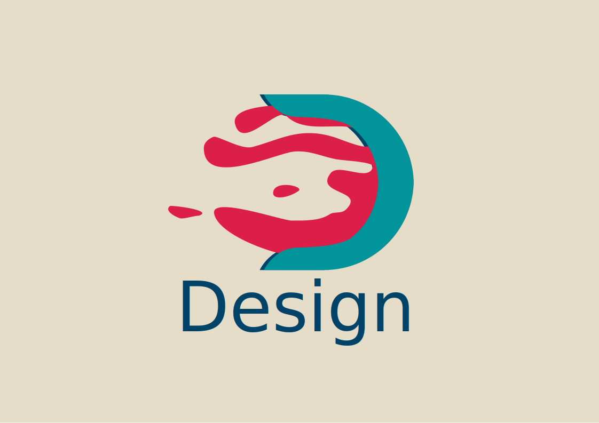
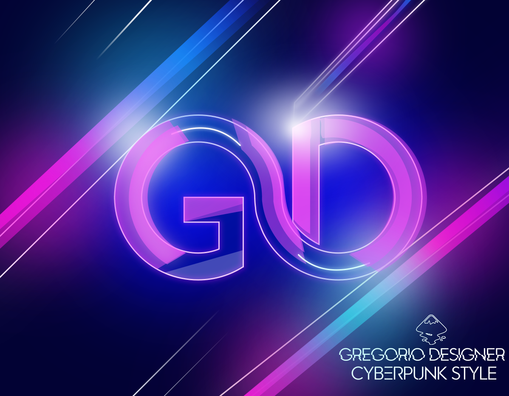
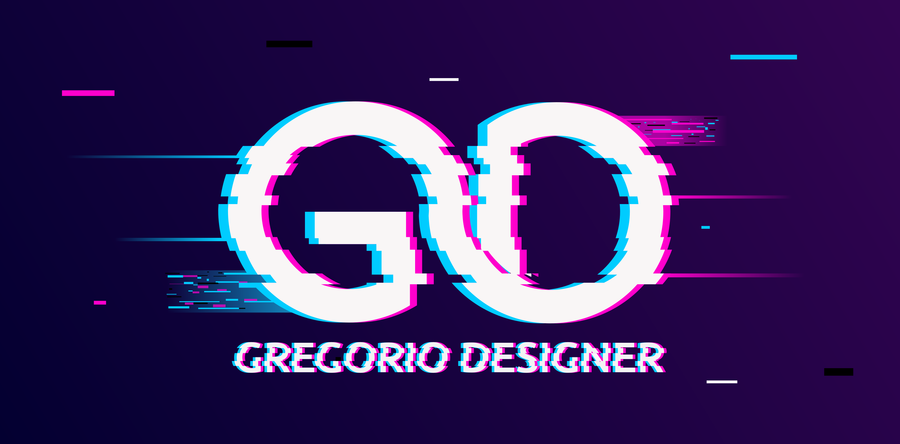
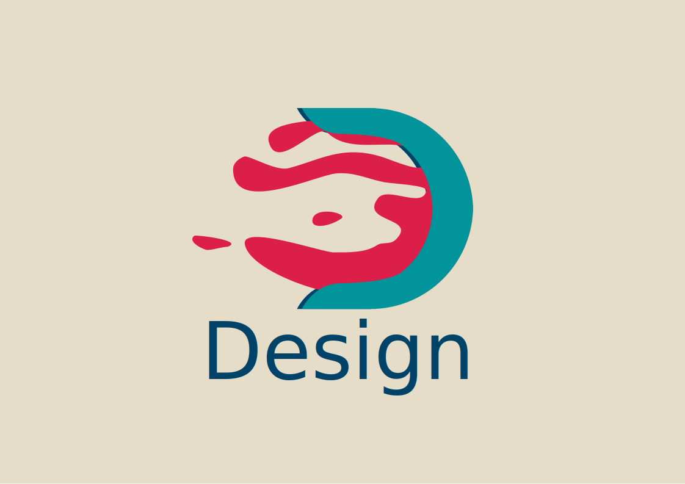
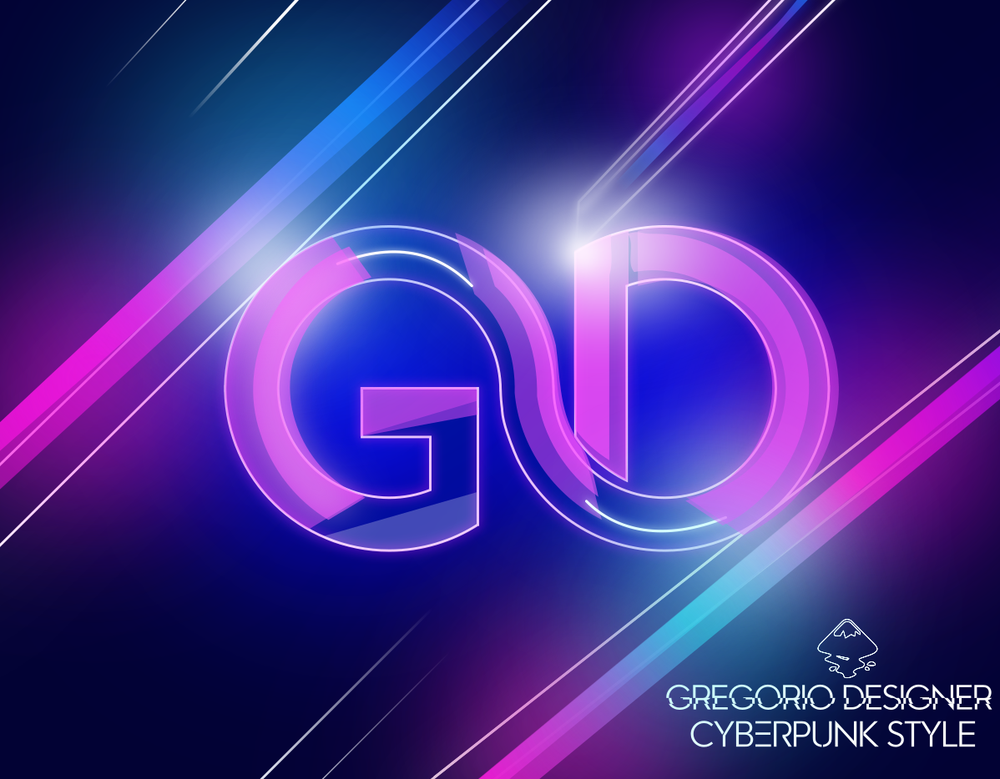
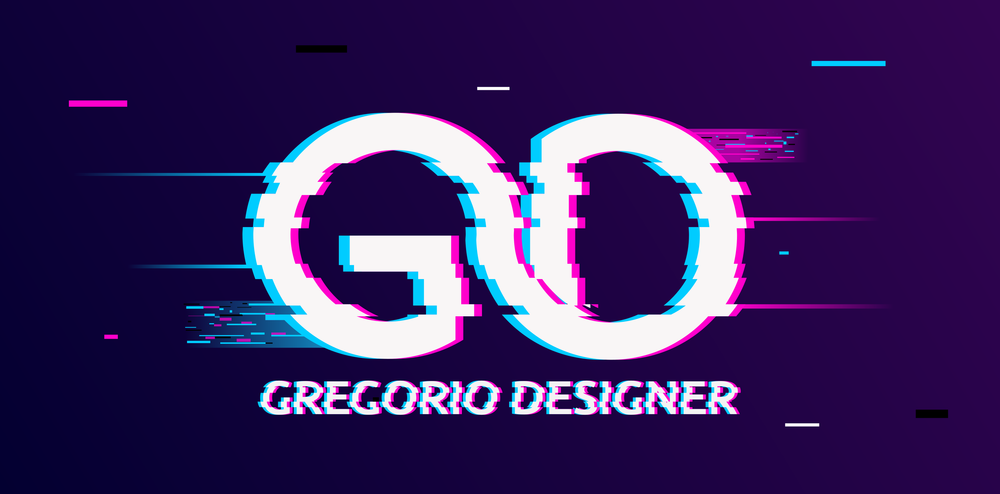
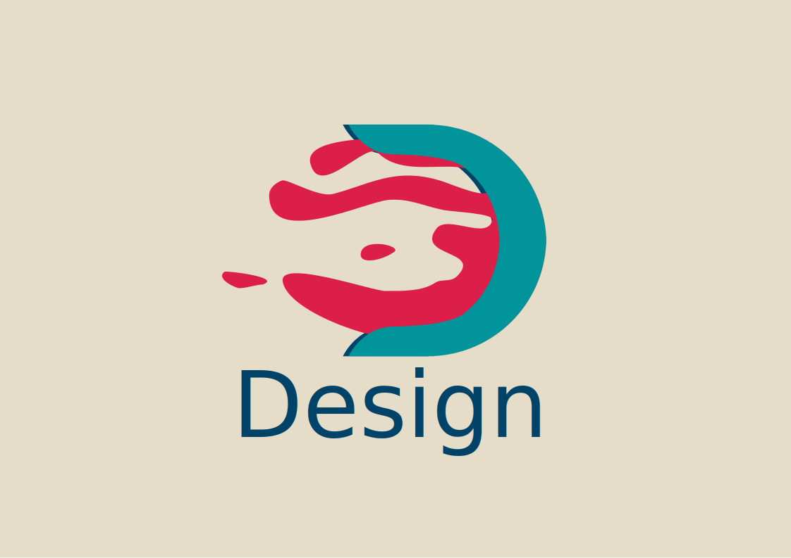
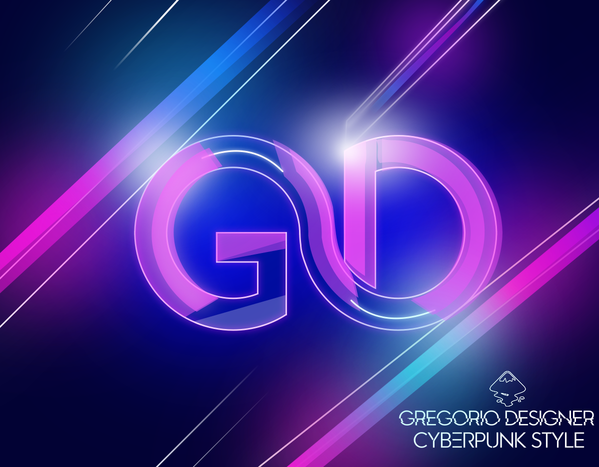
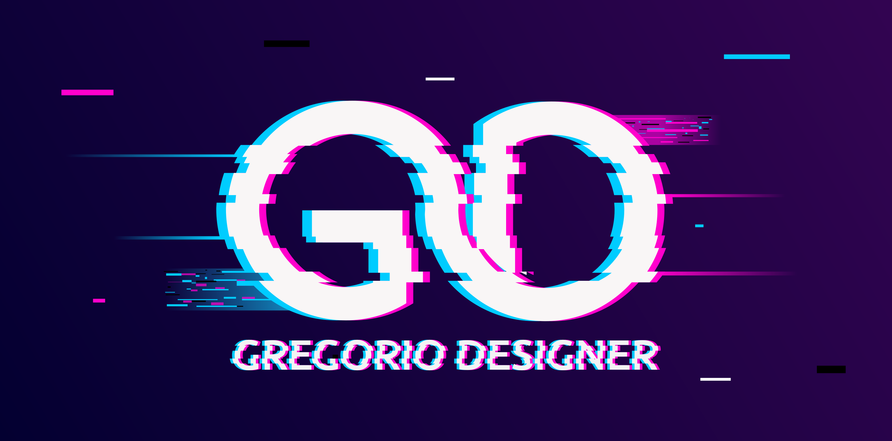

Algunos de nuestros trabajos son:
 





La ilustración vectorial es una técnica de dibujo digital que nos permite crear figuras y formas geométricas a partir de vectores previamente programados por coordenadas.
La ilustración vectorial permite crear diseños e ilustraciones con una precisión prácticamente exacta. Además, cuenta con la ventaja de que podemos aumentar, disminuir y modificar el tamaño de nuestras ilustraciones sin perder nitidez y conservando la calidad del diseño original.
Algunos de nuestros trabajos son:


